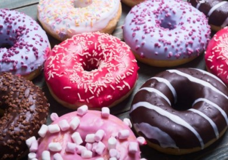

торты/пироги
булочки
печенье
пончики
Пышные пончики в духовке быстро и без жарки! Нежнейшие пончики (англ. donuts) в духовке - без фритюра!
Очень-очень воздушные, мягкие и пышные пончики, без начинки. Просто объедение!
По́нчик или пы́шка — круглое или кольцеобразное, жаренное во фритюре хлебобулочное изделие,
с начинкой или без неё. Пончики с начинкой, преимущественно из овощей или фруктов, называются «бенье».
Пышка в узком смысле слова — пончик без начинки с отверстием посередине.
 вот рецепт
шоколад, корица, орехи, глазурь, сироп, зефирки и т.д.